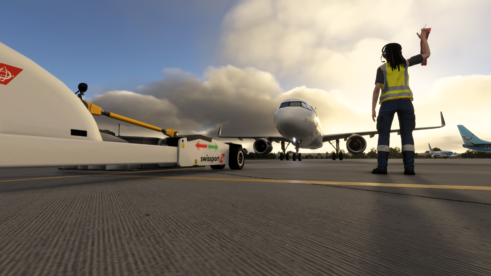

Mainline and Regional Fleet
Choose from Airbus mainline aircraft, the Fokker 100, ATR 72 and Embraer E190.

JOIN BRITISH MIDLAND
Join a virtual airline with Midlands roots, a choice of mainline and regional flying, and a welcoming pilot community.
WHY BRITISH MIDLAND
British Midland Virtual combines realistic flying, modern technology and a friendly community to create an authentic airline experience from the Heart of Britain.
Choose from Airbus mainline aircraft, the Fokker 100, ATR 72 and Embraer E190.
Record your flights and follow your progress with our own ACARS platform.
Choose a short regional sector, a European service or a long-haul flight.
Whether you're new to flight simulation or an experienced captain, everyone is welcome.
GETTING STARTED
Follow these steps to join the airline and prepare your first flight.
Complete the application below. Management reviews your details, then your approved BMA login arrives by Discord welcome DM.
Install our custom ACARS client directly from Discord and connect your simulator to British Midland Virtual.
Select a scheduled service from our network and prepare your aircraft for departure.
Log your first flight, earn your statistics and become part of the British Midland Virtual community.
REQUIREMENTS
Joining British Midland Virtual is simple. Meet these five requirements and you're ready to begin your first flight.
Members must be 18 years of age or older.
Microsoft Flight Simulator 2024.
Required for your welcome DM and airline communication.
Required to record your airline flights.
Friendly, respectful and welcoming to every pilot.
YOUR NEXT CHAPTER
Apply to British Midland Virtual. We welcome pilots aged 18 and over flying Microsoft Flight Simulator 2024.
Already have a BMA account? Contact management for help with your existing account instead of applying again.
Required fields are marked *. Your display name will appear on the public pilot roster.
Checking application availability…
READY FOR DEPARTURE?
Meet the community and take your place on the flight deck.
Before applying, read the British Midland Group Privacy Policy, including how pilot IDs, names and flights appear publicly.